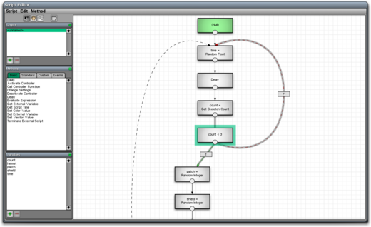

Script Editor
From C4 Engine Wiki
The C4 Engine contains a powerful scripting language that can be used to implement event sequences taking place in response to some kind of trigger in a world. A script in C4 does not require the use of any textual programming language. Instead, a script is shown as a graphical representation of the actions to be performed and their interdependencies. Scripts in C4 support local and global variables, conditional execution, loops, and expression evaluation.
For information about creating custom script methods, see Defining a Custom Method.
For information about the use of expressions in scripts, see Expression Evaluation in Scripts.
Adding a Script to the World

- In the World Editor, select the node to which you would like to assign a script.
- Choose Get Info from the Node menu or just press Ctrl-I (Cmd-I on the Mac).
- Click on the Controller tab in the Node Info dialog.
- Select the Script controller from the list of available controllers.
- Click on the Edit Script button that appears to open the Script Editor.
A script can also be assigned to any item inside a panel effect. For more information, see Panel Editor.
An existing script can be edited by selecting a node and choosing Edit Script or Panel from the Node menu, or by just pressing Ctrl-E (Cmd-E on the Mac). You can also access the script by following the same steps above, except that the script controller will already be selected in the Node Info window.
Script Execution
The graphical representation shown in the Script Editor is known as a control flow graph. The nodes in this graph are called methods, and the edges in this graph are called fibers.
A method is shown as a box in the Script Editor, and it represents a single action in the script. What a particular method actually does is determined by the C++ code that defines that method. The C++ code for many methods is built into the core engine, and the game code can implement new C++ code for any number of custom methods.
A method can produce both a boolean result and a separate output value that can be stored in a script variable. The boolean result is used for conditional execution, and the output value may be used as an input for another method.
A fiber is a directed edge shown as a curve with an arrowhead at one end, and it represents the flow of execution from one method to another. The method from which the fiber starts is called the start method for the fiber, and the method to which the fiber points is called the finish method for the fiber. Each fiber possesses an execution mode that is one of the following values, and this mode controls conditional execution.
- Execute always. The fiber is followed regardless of the boolean result produced by its start method. These fibers are colored black.
- Execute on condition true. The fiber is followed only if the boolean result produced by its start method was true. These fibers are colored green and display a box containing the letter T.
- Execute on condition false. The fiber is followed only if the boolean result produced by its start method was false. These fibers are colored red and display a box containing the letter F.
A fiber that represents a loop in the script is shown as a dashed curve. Looping fibers (also known as back edges) are detected automatically by the Script Editor and cannot be specified as looping or not looping by the user.
When a script begins execution, the methods having no incoming fibers are visited first and executed. These methods are automatically colored green in the Script Editor. When a method finishes executing, each of its outgoing fibers is signaled as either live or dead depending on the boolean result of the method and the execution mode of the fiber. Any fibers that are not dead looping fibers are signaled as ready. A subsequent method is executed whenever (a) all of its incoming non-looping fibers are ready or (b) any of its looping incoming fibers are ready. If any of the fibers are live, then the next method is executed normally. If all of the fibers are dead, then the next method is skipped, but its non-looping outgoing fibers are still signaled as in the ready and dead state. This model allows execution to continue past points where different conditionally executed paths join back together.
Multiple fibers leaving a particular method can be thought of as executing in parallel from a high-level perspective. Since they are actually executed serially at the low level in a cooperatively scheduled fashion, the edges representing control flow in a script are reminiscent of operating system fibers, and that is where they get their name. The order in which methods immediately succeeding a completed method are executed is unspecified, except for the restriction that all incoming non-looping fibers must be ready.
Methods are colored red in the case that the user creates a closed loop having no incoming fibers from methods not belonging to a cycle in the graph. Methods in such a loop can never be executed, so the red color provides an indication of dead code. This situation can be corrected by adding a null method to the graph and drawing a fiber between it and the first method that should execute in the loop.
Editing a Script
The tabbed lists on the left side of the Script Editor show the methods that are available for use in a script. The Basic and Standard tabs contain methods that are implemented by the core engine, and the Custom tab contains methods that are implemented by the game code.
When the Script Editor is opened for the first time for a particular node in a world or widget in a panel, the script viewport is blank. New methods can be added to the script by selecting them from the lists and clicking in the viewport. The editor won't let you place two methods on top of each other, and the cursor will change to indicate where it's possible to place a new method.
Fibers are added to a script by clicking inside the circle at the bottom of any method and dragging into another method. This causes a new fiber to be created beginning at the method you clicked on and ending at the method inside which the mouse was released. You cannot create multiple fibers between the same two methods. The execution mode of a fiber can be changed by selecting the Cycle Fiber Condition command from the Script menu or using the shortcut Ctrl-F (Cmd-F on the Mac).
The physical position of a method in the viewport is irrelevant. The execution flow structure of a script is determined entirely by the fiber connections. Methods may be placed in any convenient location.
Script Editor Tools
There are four tool buttons in the upper-left corner of the Script Editor window, and they have the following uses. In addition to clicking on the tool button, each of these tools can also be selected by pressing the shortcut number key as shown in the table. (The shortcuts were chosen to be the same as the corresponding tools in the World Editor.)
|
Icon |
Shortcut |
Function |
|
|
1 |
Select / Move. Selects a method or fiber in a script. Clicking outside of a method and dragging will create a box that selects all of the methods inside it. Clicking inside a method and dragging moves all of the currently selected methods. (When methods are moved, they are automatically prevented from moving on top of other methods.) |
|
|
6 |
Scroll. Scrolls the script viewport. Holding the Alt key (Option on the Mac) with any other tool temporarily selects the scroll tool. |
|
|
7 |
Zoom. Changes the scale of the script viewport. Using the mouse wheel with any other tool also zooms. |
|
|
|
Draw Section. Draws a rectangular box with a title bar behind all methods in the graph. This can be used to visually organize groups of methods in a script. |
Method Settings
Each method may expose a group of configurable settings that can be accessed in a Method Info window. To edit them, select a single method and select Get Info from the Script menu or use the shortcut Ctrl-I (Cmd-I on the Mac). Double-clicking on a method will also open its Method Info window. The layout of the Method Info window depends on the type of the selected method. In all cases, the configurable settings for the method are displayed on the right side of the Method Info window. A column entitled "Input Variables" is also shown that let's you specify that a variable should be used as the input for a setting instead of any constant value entered in the window. (See below for more information about variables in scripts.)
Most methods operate on some node in the scene, called the target of the method. The target node may be chosen from the list in the upper-left corner of the Method Info window. The target node may be any of the following nodes.
- The target node of the script controller itself. This is the same node that the script is attached to.
- The trigger node that was activated and caused the script to execute.
- The node that ultimately initiated the script by activating the trigger node.
- Any node that is connected to the target node of the controller. (See Connectors for information about making connections between nodes.)
Once a target node has been selected for a method, it is displayed in parentheses under the method's name in the script viewport.
Call Controller Function Method
If a method is of type "Call Controller Function", then a list of available controller functions for the selected target node is displayed on the left side of the Method Info window. Once a function is selected, its configurable settings are displayed in the list on the right side of the window. If a function outputs a value, then a field for designating an output variable also appears in the lower-left corner of the window.
For a description of the functions made available by the built-in controllers, see Functions.
Change Settings Method
If a method is of type "Change Settings", then a list of setting categories for the object referenced by the selected target node is displayed on the left side of the Method Info window. (Most nodes types have only one category.) Once a category is selected, the object's configurable settings are displayed in the list on the right side of the window. Any settings that are shown to be in an indeterminant state are not affected when the method is executed. All of the settings can be reset into the indeterminant state by clicking the Clear Settings button.
Evaluate Expression Method
If a method is of type "Evaluate Expression", then an expression can be entered in the Method Info window. See Expression Evaluation in Scripts for more information about expressions.
Variables
A script may define any number of variables, each having one of the following types.
|
Type |
Description |
|
boolean |
The value true or false. |
|
integer |
A 32-bit signed integer. |
|
float |
A 32-bit floating-point number. |
|
string |
A character string. |
|
color |
A four-component RGBA color. |
|
vector |
A three-dimensional vector. |
|
point |
A three-dimensional point. |
A new variable is created by clicking the New button below the variable list on the left side of the Script Editor window. After clicking the New button, a dialog appears that lets you enter the following information about the new variable.
- The variable name. A variable name can contain any of the characters A-Z, a-z, 0-9, or _ (underscore). A variable name cannot begin with a number.
- The variable type. This can be any of the types listed above.
- The variable scope. The scope can be Script, Object, or Controller.
- If a variable has the Script scope, then its value is reset to its initial value each time the script is run.
- If a variable has the Object scope, then it is shared among all instances of the node to which the script is attached and retains its value from one run to the next in a manner analogous to static local variables in C++.
- If a variable has the Controller scope, then it is stored in the controller for each instance of the node to which the script is attached and retains its value from one run to the next. Each instance has its own copy of the variable.
- The variable's initial value.
After a variable is created, it can be changed by double-clicking on it in the variable list.
Whenever a variable is designated to receive the output value for a method, the name of the variable followed by an equals sign is displayed in the method's box in the script viewport. This gives a visual indication that the variable is being set to the value produced by the method. The output value of a method is implicitly converted to the type of the variable to which it is assigned, if necessary.
The value of a variable is used as an input for a method by entering the variable's name under the “Input Variables” column for a particular setting in the Method Info box. If the variable's type does not match the expected type for the setting, then its value is implicitly converted to the needed type.